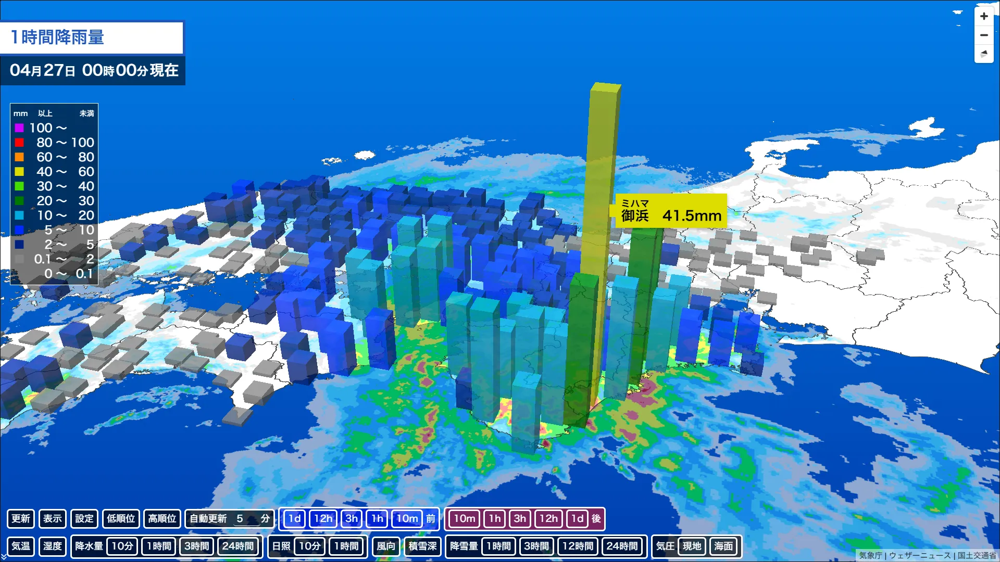

3D表示搭載のお知らせ
3D表示搭載のお知らせアメダス天気Viewer for kottaro123456 をアップデートしました！
アップデートの詳細は以下のとおりです。
① 雨や雪の状況が一目瞭然。3D表示モードが登場。
降雨量・積雪深・降雪量の各モードにて、これまでの平面の丸の色分けだった観測点ごとの表示が、観測地点ごとの数値を「高さ」で表現する3D描画が可能になりました。
色の濃淡だけでなく、立体的な柱として表示されることで、周辺地域との差や気象の変化を直感的にキャッチ。地図の角度を変えれば、気になる地点の状況をより詳細にチェックできます。
さらに「設定」パネルからは、ご利用のシーンや好みに合わせて表示を細かくカスタマイズ可能です。
柱の「形状（四角・円）」「太さ」「高さ」「透明度」を変更でき、地図の視認性を保ちながら最適な迫力で表示できます。

② ポップアップの表示スタイルが選択可能に
観測点をタップした際に表示されるポップアップのデザインを、2つのスタイルから選べるようになりました。
3D表示によってポップアップがどの観測点を示しているのかわかりにくくなった際のオプションとして使えます。
標 準 ： どんな地図背景でも読みやすい「白背景×黒文字」のシンプルデザイン。
観測点カラー： その地点の観測値に応じた色が背景に反映される、直感的なデザイン。
その時の天候状況を、より視覚的に、鮮やかに把握いただけます。